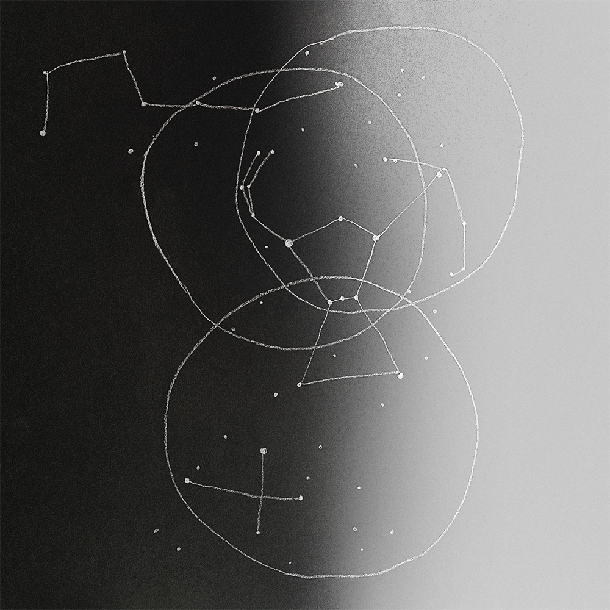

gim bu ngid, gim am bu / Today, Tonight
gim bu ngid
今晡日
today
gim am bu 今暗晡
Tonight
Looking for a reminder of
You are not lost in this universe
The Orion constellation, located on the celestial equator, is visible
throughout the world. It is the first constellation I learned to
identify. The Orion symbolism serves as a comforting reminder that
soothes yearning.
Tattoo by Angel Garcia